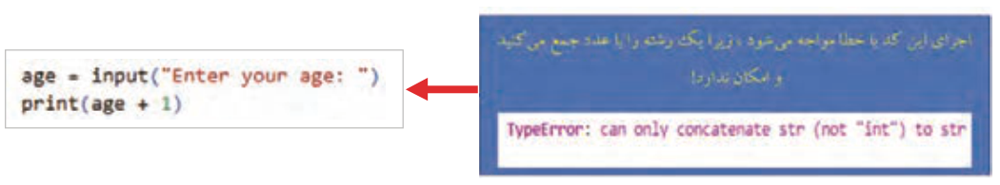
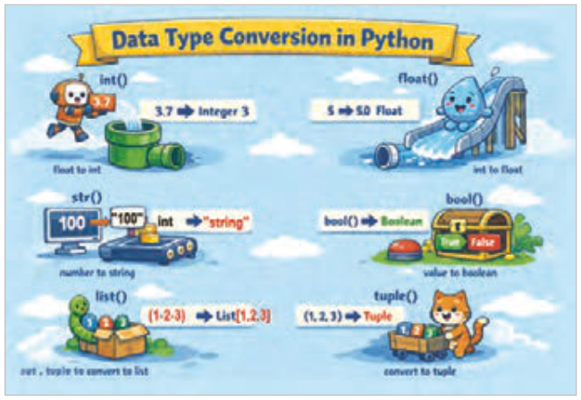
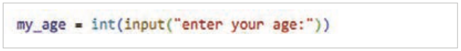
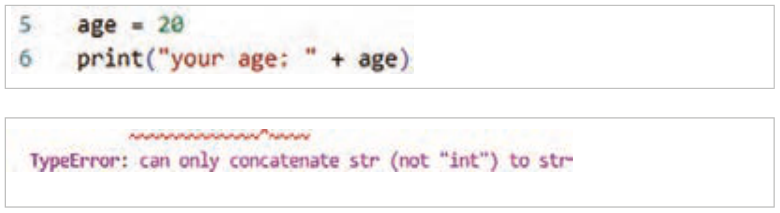
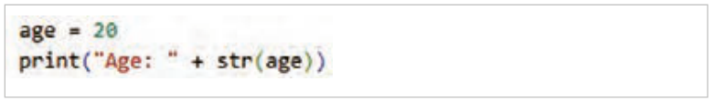
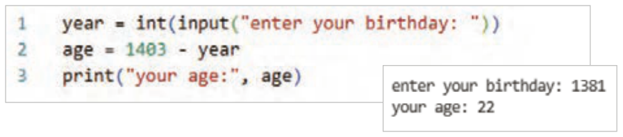
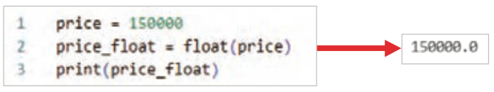
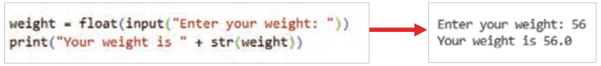
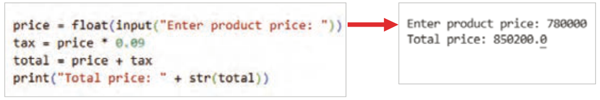

این دستور مقدار وارد شده از طریق صفحهکلید را بهصورت رشتهای (string) دریافت میکند و خروجی آن یک مقدار رشتهای است (حتی اگر "عدد" وارد کرده باشید.) (شکل 25).

شکل ۲۵
تبدیل نوع داده (Type Casting) در پایتون
در برنامهنویسی پایتون گاهی لازم است نوع یک داده را به نوع دیگری تبدیل کنیم. به این کار تبدیل نوع داده یا Type Casting گفته میشود.

شکل ۲۶
برای مثال، وقتی ورودی را با تابع input() دریافت میکنید، مقدار واردشده بهصورت رشته (str) ذخیره میشود. اگر بخواهید با آن محاسبات ریاضی انجام دهید، لازم است آن را به عدد تبدیل کنید.
پایتون برای تبدیل نوع داده، توابع آمادهای در اختیار برنامه نویس قرار داده است، مانند:
تبدیل به عدد صحیح → int()
تبدیل به عدد اعشاری → float()
تبدیل به رشته → str()
تبدیل به مقدار منطقی (درست/ نادرست) → bool()
صفحه ۱۴
مطابق شکل27 برای اینکه نوع داده را به نوع عددی تبدیل کنید میتوانید به این صورت عمل کنید:
مثال: برنامهای بنویسید که سن کاربر را دریافت و با یک پیغام مناسب نمایش دهد.

شکل ۲۷
مثال: به این مثال دقت کنید.
بعد از اجرا، خطا را مشاهده خواهید کرد. چون عدد مستقیماً به متن متصل شده است و این امکانپذیر نیست (شکل28).

شکل ۲۸
برای رفع این خطا لازم است، تبدیل نوع داده عددی به نوع داده رشتهای را به صورت زیر انجام دهید. پس از اجرا، کد خطایی مشاهده نخواهید کرد (شکل29).

شکل ۲۹
مثال: در خط1 کد مقابل سال تولد کاربر دریافت میشود، تابع int آن را به نوع عددی صحیح تبدیل و در متغیر year ذخیره میکند. در خط2 تفاضل عدد سال فعلی از سال تولد محاسبه و در متغیر age ذخیره میشود. در خط 3 با دستور print سن کاربر با پیغام "your age:" نمایش داده میشود (شکل30).

شکل ۳۰
صفحه ۱۵
مثال: مقدار متغیر price عددی از نوع صحیح است. در خط 2 برای تبدیل آن به یک عدد اعشاری از تابع float استفاده شده است (شکل31).

شکل ۳۱
مثال: تابع input وزن را بهصورت یک مقدار عددی دریافت میکند و خروجی آن یک مقدار متنی است که تابع float آن را به نوع عدد اعشاری تبدیل و در متغیر weight ذخیره میکند. در خط بعد دستور print دو رشته را با عملگر " + " به هم الحاق میکند (شکل32).

شکل ۳۲
مشاهده میکنید که در این خط تابع str بار دیگر متغیر weight را به نوع متنی تبدیل کرده است.
مثال: محاسبه قیمت کالا پس از اعمال ۹درصد مالیات بر ارزش افزوده (شکل33).

شکل ۳۳
Page 13
This statement receives the value typed on the keyboard as a string (string), and its output is a string value (even if you typed a "number") (Figure 25).
Figure 25
Type casting in Python
In Python programming you sometimes need to convert a piece of data from one type to another. This is called data type conversion, or Type Casting.
Figure 26
برای مثال، وقتی ورودی را با تابع input() دریافت میکنید، مقدار واردشده بهصورت رشته (str) ذخیره میشود. اگر بخواهید با آن محاسبات ریاضی انجام دهید، لازم است آن را به عدد تبدیل کنید.
For type conversion, Python gives the programmer ready-made functions, such as:
Convert to an integer → int()
Convert to a decimal number → float()
Convert to a string → str()
Convert to a boolean (true/false) → bool()
Page 14
As in Figure 27, to convert data to a number you can do this:
Example: write a program that gets the user's age and shows it with a suitable message.
Figure 27
Example: look closely at this example.
When you run it, you will see an error, because the number is attached directly to the text, and that is not allowed (Figure 28).
Figure 28
To fix this error, convert the number to a string as shown below. After running it, you will see no error (Figure 29).
Figure 29
مثال: در خط1 کد مقابل سال تولد کاربر دریافت میشود، تابع int آن را به نوع عددی صحیح تبدیل و در متغیر year ذخیره میکند. در خط2 تفاضل عدد سال فعلی از سال تولد محاسبه و در متغیر age ذخیره میشود. در خط 3 با دستور print سن کاربر با پیغام "your age:" نمایش داده میشود (شکل30).
Figure 30
Page 15
Example: the value of the price variable is an integer. On line 2, the float function is used to convert it to a decimal number (Figure 31).
Figure 31
مثال: تابع input وزن را بهصورت یک مقدار عددی دریافت میکند و خروجی آن یک مقدار متنی است که تابع float آن را به نوع عدد اعشاری تبدیل و در متغیر weight ذخیره میکند. در خط بعد دستور print دو رشته را با عملگر " + " به هم الحاق میکند (شکل32).
Figure 32
You can see that on this line the str function converts the weight variable back to text.
Example: the price of an item after adding 9 percent value-added tax (Figure 33).